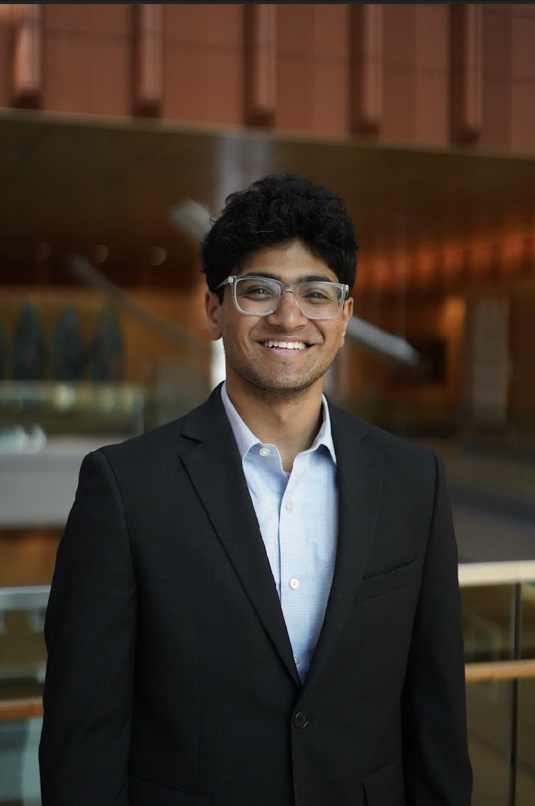
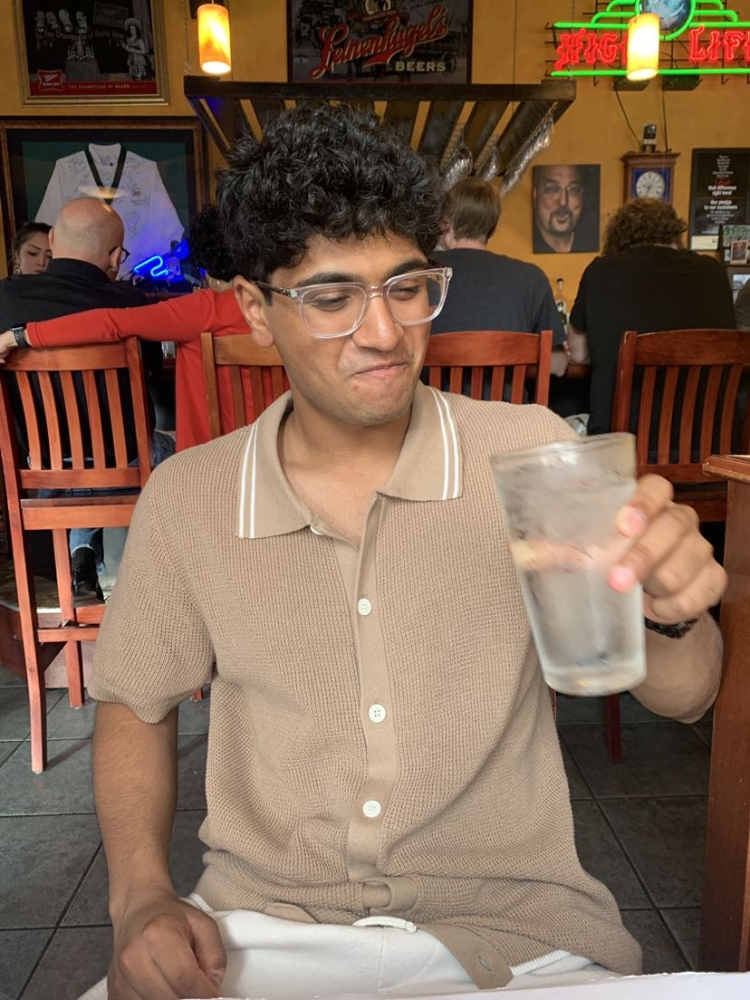
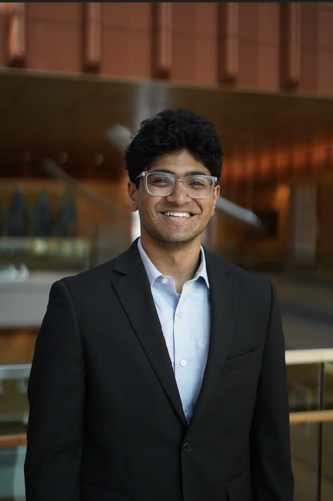
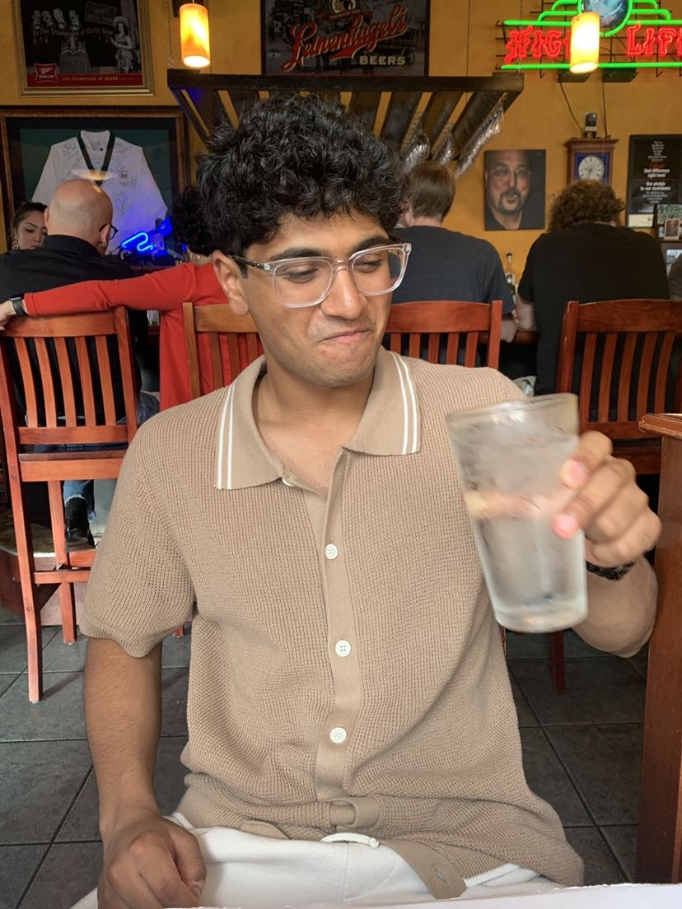
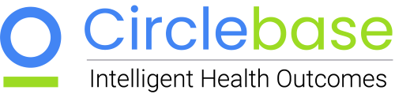
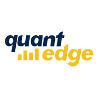
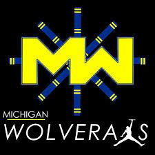
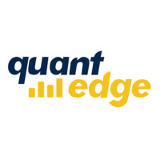
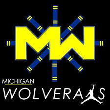

ABOUT ME
Hello! My name is Aryan Kamath and I'm an undergraduate student at the University of Michigan - Ann Arbor. I hope you enjoy my website and are able to learn a little bit about my life :)
I grew up in West Bloomfield, MI and I knew from the beginning that I wanted to be a Michigan Wolverine. Following my graduation from West Bloomfield High School in 2020, I started my freshman year at the University of Michigan.
Although I've known since my first semester that I want to study Computer Science, it hasn't always been an easy ride. Studying in such a big school (where CS is a very popular major) can be very intimidating. There were times when I faced imposter syndrome and felt like this major might not be for me.
The work experience I've had, organizations I've joined, and the communities I am apart of have helped me foster the confidence to conquer this doubt, allowing for me to discover my passion for Computer Science! Upon my graduation in May of 2024, I hope to work full time as a software engineer.
I am currently looking for a software engineering internship in Summer 2023. If you are interested in connecting with me please reach out to me through any of my social media or shoot an email to aryank@umich.edu
Check out my past internship experience below!
Worked as a Software Engineering Intern @Circlebase to develop a highly contextualized chat bot. Click on the picture to learn more about Circlebase!
Skills: Python, RASA AI
Worked as a Data Engineering Intern @MachineTools.com to scrape the web for contact information. Click on the picture to learn more about MachineTools.com!
Skills: Python, Selenium, bs4
Check out the organizations I am apart of!
 



Member of Kappa Theta Pi - Professional Technology Fraternity. The nation's first technology fraternity centered around its five pillars: professional development, alumni connections, social growth, technological advancement, and academic support. Click on the picture to learn more about KTP!
Vice President of Consulting of Quantitative Consulting & Finance Group (QCF/QuantEdge). Worked as a software development team lead to manage and implement projects for companies. Click on the picture to learn more about QCF!
Member of competitive Indian dance team, Michigan Wolveraas. Competed in over 10 competitions around the United States and placed 9th in the country. Click on the picture to learn more about Wolveraas!
Member of the Indian American Student Association at the University of Michigan. Helped organize cultural events that promote Indian culture and performed in 2 dance shows at the Michigan Theater. Click on the picture to learn more about IASA!